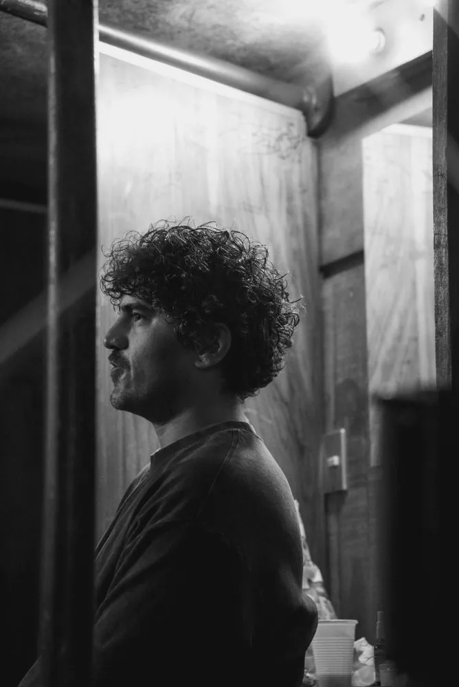
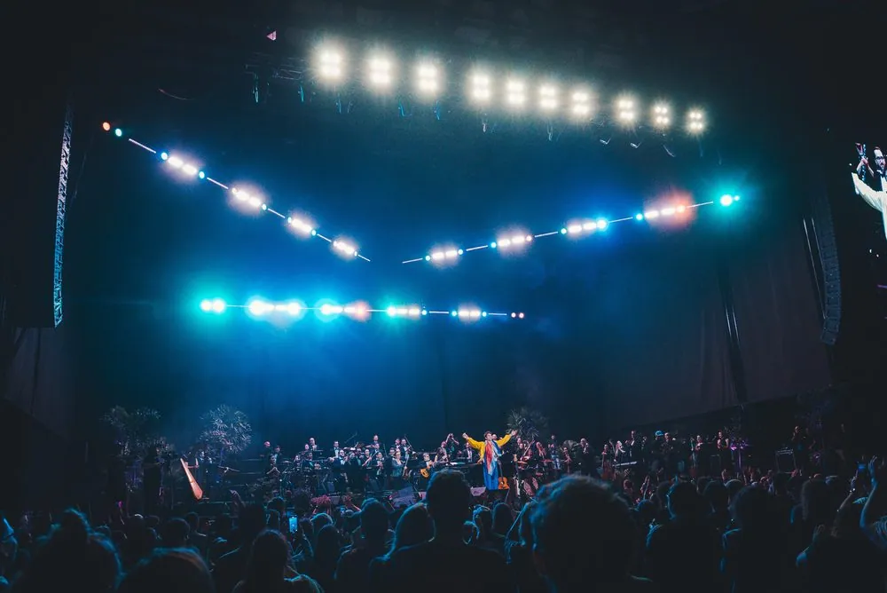
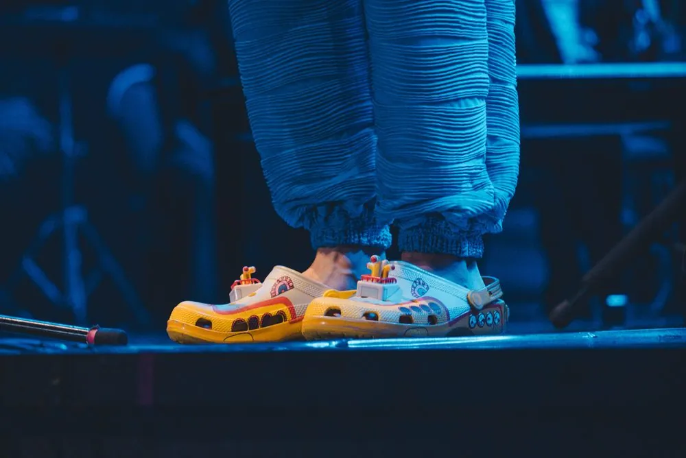
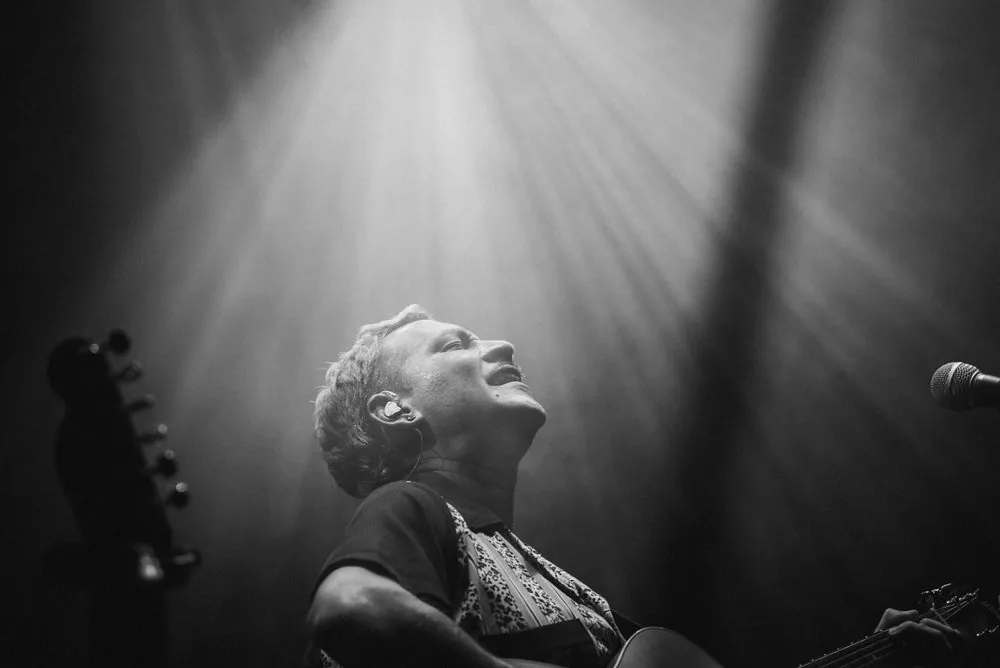
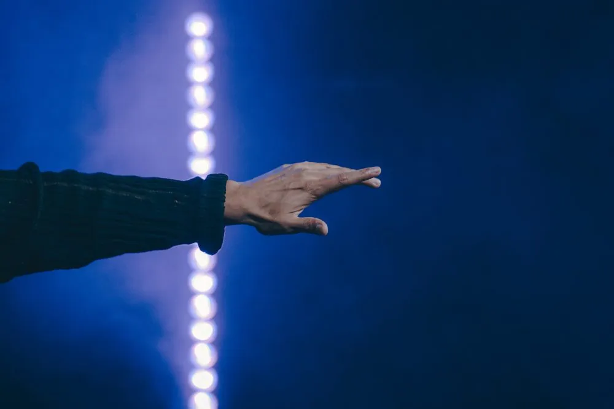
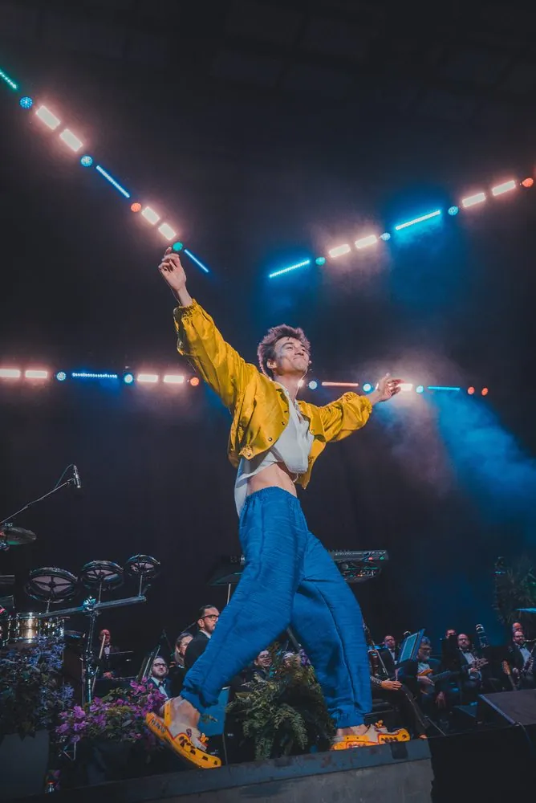
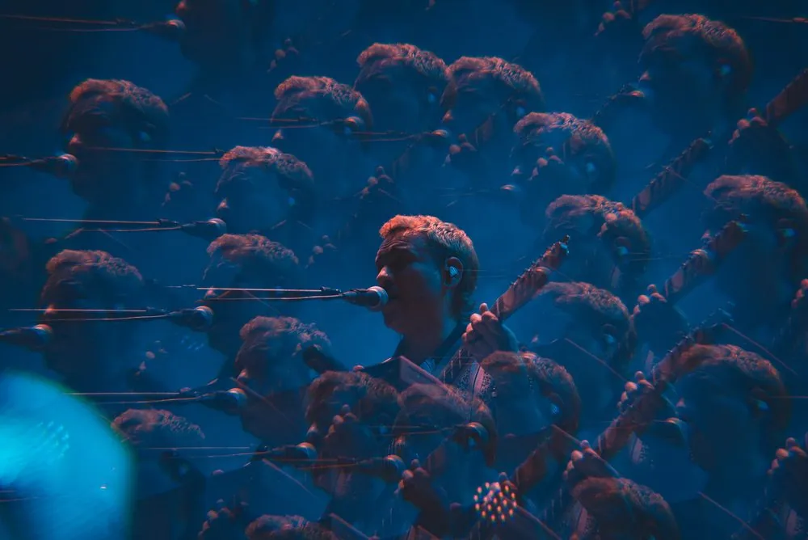
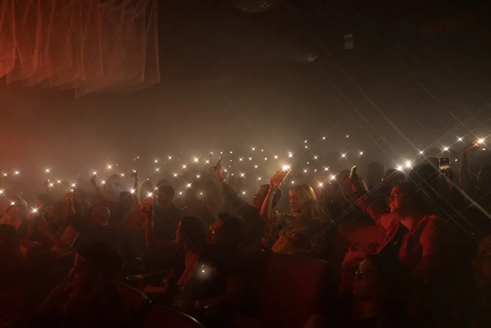
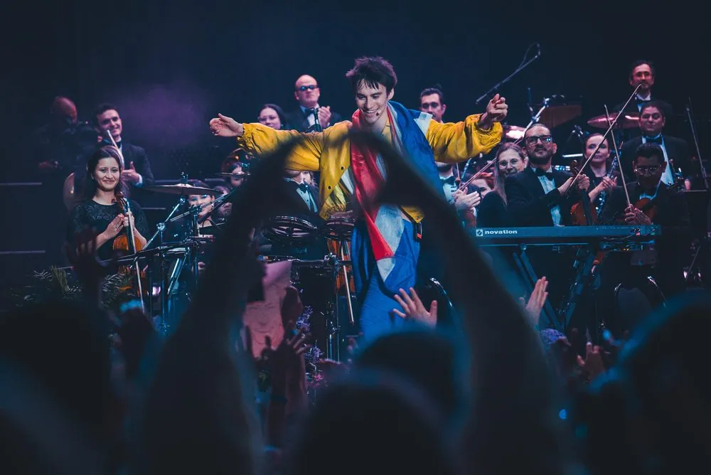

One night of live music, from the dressing-room door to the final bow.
16 photos · Jose Pablo García / PERSONA

01 · Before going on: profile in the corridorArturo Pardo · 2025
02 · The cello warms up backstageArturo Pardo · 2025 
03 · Wide shot: the hall and its lightJacob Collier · 2025  04 · The entrance: open arms, symmetryJacob Collier · 2025
04 · The entrance: open arms, symmetryJacob Collier · 2025
05 · Close-up among flaresDaniel Patiño · 2024

06 · A breath of humor: the shoesJacob Collier · 2025 
07 · Black and white: light takes overDaniel Patiño · 2024
08 · The leap: energy risesJacob Collier · 2025

09 · Detail: a hand against the LEDFabi Arroyo · 2026
10 · Signature: an in-camera swirlDaniel Patiño · 2024 
11 · The shout, in verticalJacob Collier · 2025 
12 · Signature II: the prism multipliesDaniel Patiño · 2024  13 · Pause: the baton, backlitJacob Collier · 2025
13 · Pause: the baton, backlitJacob Collier · 2025 
14 · The audience lights up the roomArturo Pardo · 2025 
15 · Climax: artist, orchestra and handsJacob Collier · 2025
16 · Ending: two silhouettes watch the lightArturo Pardo · 2025